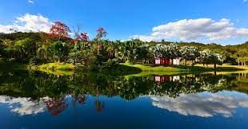
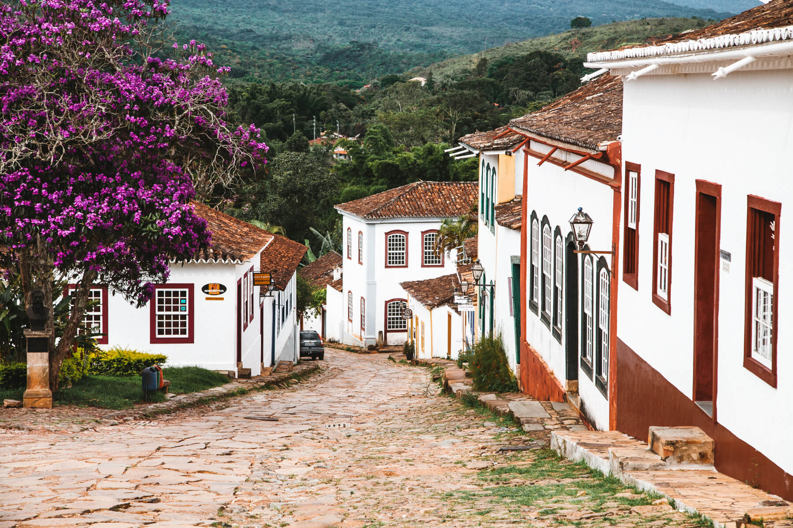

Minas Gerais, estado localizado na região Sudeste do Brasil, é conhecido por sua rica história, arquitetura colonial, cidades históricas, paisagens naturais e culinária típica. É um estado com uma grande diversidade de pontos turísticos. Aqui estão alguns dos principais pontos turísticos de Minas Gerais:
Bem-vindo à Minas Gerais

Ouro Preto: Uma das cidades históricas mais famosas do Brasil e Patrimônio Mundial da UNESCO, Ouro Preto encanta os visitantes com suas igrejas barrocas, ruas de pedra e museus. Destacam-se a Igreja de São Francisco de Assis, a Igreja do Pilar, a Casa dos Contos e a Mina da Passagem.

Inhotim: Localizado em Brumadinho, Inhotim é um dos maiores museus a céu aberto do mundo. Abriga um acervo de arte contemporânea e jardins botânicos exuberantes. É um local único, que combina arte, natureza e paisagismo.

Belo Horizonte: A capital de Minas Gerais oferece uma mistura de atrações culturais e urbanas. Destacam-se a Praça da Liberdade, o Conjunto Arquitetônico da Pampulha (com a Igreja de São Francisco de Assis e o Museu de Arte da Pampulha), o Mercado Central (com produtos típicos e gastronomia mineira) e o Parque das Mangabeiras.

Tiradentes: Uma charmosa cidade histórica, com ruas de pedra e casarões coloniais preservados. Possui igrejas barrocas, como a Matriz de Santo Antônio, e é famosa pelo Festival de Cinema de Tiradentes, que ocorre anualmente.